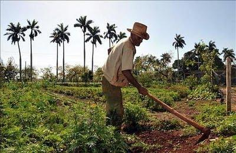

Climate Change effect in the Latinos Community in California
 CSI-0253: Living with Climate Change: vulnerability, denial, and Resilience in a Global World: In this class, we learned about how some communities may be much more affected by climate change than others. We also talked about the importance of language and the perspective we transmit when talking about marginalized communities. For my final project, I did research on how the Latino community in California is one of the most affected by climate change, global warming, and environmental pollution. .
CSI-0253: Living with Climate Change: vulnerability, denial, and Resilience in a Global World: In this class, we learned about how some communities may be much more affected by climate change than others. We also talked about the importance of language and the perspective we transmit when talking about marginalized communities. For my final project, I did research on how the Latino community in California is one of the most affected by climate change, global warming, and environmental pollution. .
Generational Wealth: Power in Ignorance
 SWG 241: White Supremacy in the Age of Trump: In this course, we explored the different aspects of white supremacy and how, during the presidential term of former United States president Donald Trump, there was a massive increase in white supremacist behaviors from American citizens all over the country. For our final project, there were multiple prompt questions that we could use to answer, and in my project, I talked about the ignorance that there tends to be in communities where people are more privileged, yet they don't realize how much they are. In this project, I also talked about how there are systematic, generational, and institutionalized disadvantages that affect minorities, especially BIPOC and immigrant communities.
.
SWG 241: White Supremacy in the Age of Trump: In this course, we explored the different aspects of white supremacy and how, during the presidential term of former United States president Donald Trump, there was a massive increase in white supremacist behaviors from American citizens all over the country. For our final project, there were multiple prompt questions that we could use to answer, and in my project, I talked about the ignorance that there tends to be in communities where people are more privileged, yet they don't realize how much they are. In this project, I also talked about how there are systematic, generational, and institutionalized disadvantages that affect minorities, especially BIPOC and immigrant communities.
.
Dominican Republic: Campesinos
CSI-0195: Introduction to Latin American Studies Final Presentation: as the name says, this course was an introduction to Latin American studies in which the focus was to get an overall understanding of how not only colonization happened in Latin America but also how it affected its Governmental institutions and systems now. We also explored how there is a misconception that in LATAM, everybody is equal and that there is no racism or a class system; it is far away from reality. In the course, we learned that there are different types of marginalized communities in Latin America, whose identities vary depending on the country; however, there are some common patterns. For my final course project, I research the campesinos community in the Dominican Republic. In my final presentation, I demonstrated how the campesinos are significantly affected by the deforestation and industrialization of the countryside and how what seems to be minimal environmental changes have vast and long-term impacts on their daily life. .